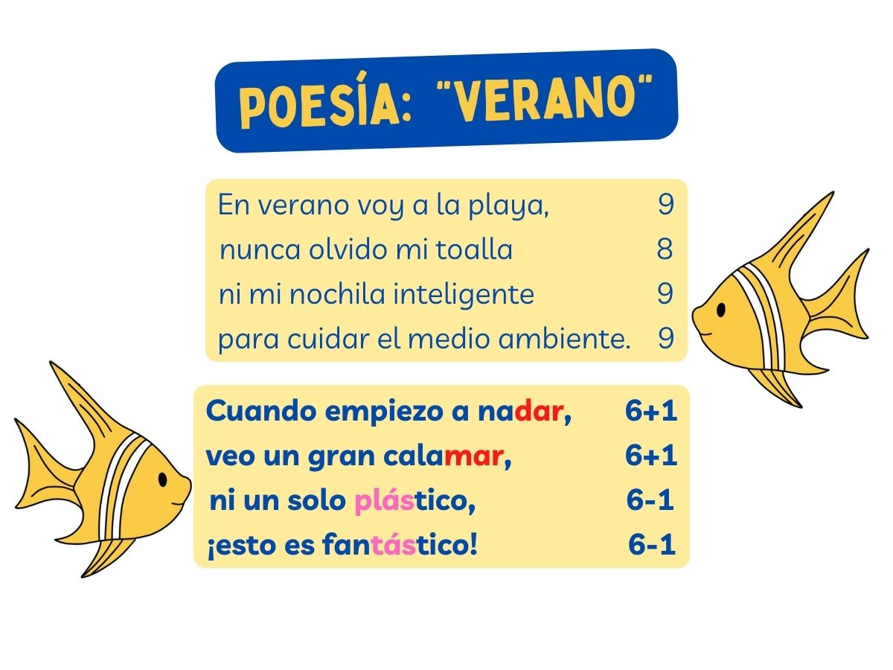
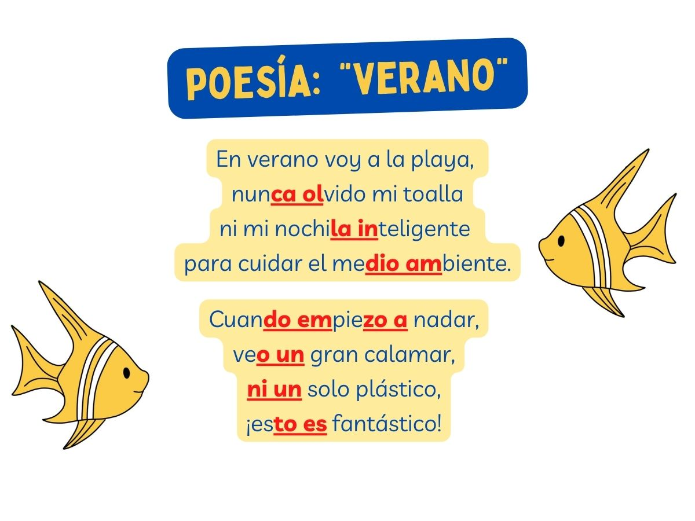
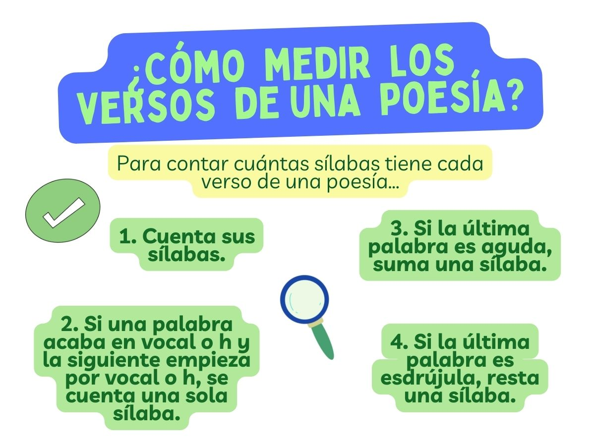

POESÍA. ¿Qué es la poesía?
La poesía es, como has leído antes, un género literario en el que se utiliza la lengua de un modo especial para expresar emociones y sentimientos con elegancia y belleza en verso o en prosa.
A menudo una poesía se divide en versos que, a su vez, se organizan en estrofas. Hay diferentes tipos de estrofas según el número de versos que las forman: pareado (dos versos), terceto (tres versos), cuarteto (cuatro versos), etc.
Como ya hemos activado anteriormente, una poesía se divide en versos que, a su vez, se organizan en estrofas. Hay diferentes tipos de estrofas según el número de versos que las forman: pareado (dos versos), terceto (tres versos), cuarteto (cuatro versos), etc.
Por ejemplo:
MÉTRICA. ¿Cómo medir los versos de una poesía?
Según el número de sílabas, los versos pueden ser de arte mayor (si tienen más de 8 sílabas) o de arte menor (si tienen 8 sílabas o menos).
Para contar el número de sílabas de un verso, debemos seguir algunas normas:
- Si el verso acaba en una palabra aguda, añadimos una sílaba al recuento total.
- Si el verso acaba en una palabra esdrújula, restamos una sílaba al recuento total.

Ejemplo 1
“Ella puede escribir”: se contaría así: E - lla - pue - dees - cri - bir (6 sílabas, en lugar de 7).
A este recuento de sílabas, además, habría que sumar 1 porque la última palabra es aguda.
Ejemplo 2
“Por su honor, seguro que vendrá”: se contaría así: por - suho - nor - ven - drá (5 sílabas, en vez de 6).
A este recuento de sílabas, además, habría que sumar 1 porque la última palabra es aguda.


RIMA. ¿Cuándo riman dos versos?
En la poesía se utilizan recursos como la rima, que consiste en la repetición de sonidos idénticos o parecidos al final de los versos a partir de la última sílaba tónica.
La rima puede ser:
- Consonante, si se repiten todos los sonidos a partir de la última sílaba tónica.
Por ejemplo: en las palabras sol y parasol coinciden todos los sonidos a partir de la última sílaba tónica.
- Asonante, si solo se repiten los sonidos vocálicos a partir de la última sílaba tónica.
Por ejemplo: en las palabras sol y avión coinciden las vocales a partir de la última sílaba tónica.


{kind=link}
{kind=link}
{kind=link}
{kind=link}